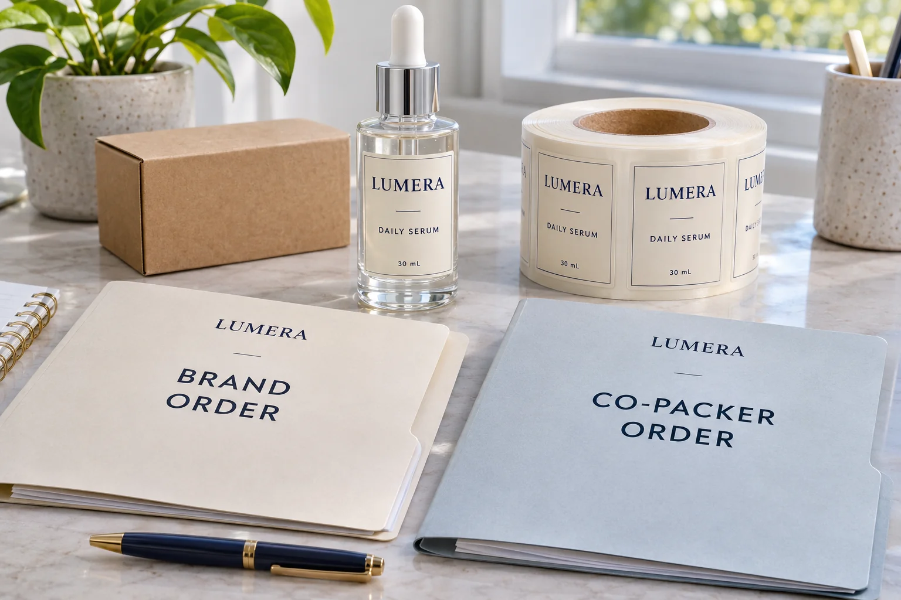
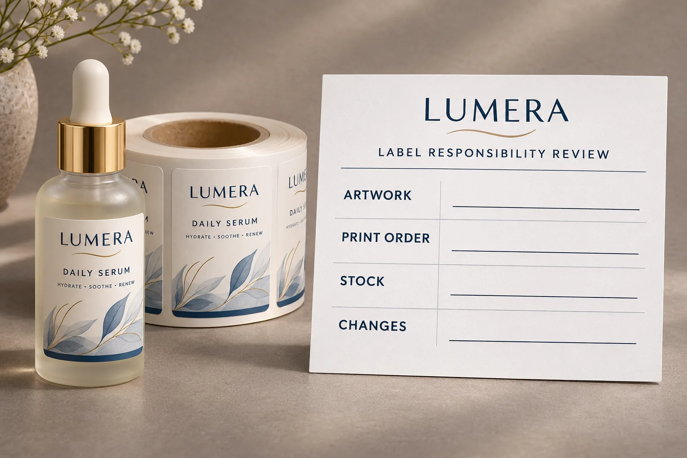

Have the co-packer purchase your cosmetic labels when its written offer covers the printing you need and gives you workable control of approvals, stock and future changes. Buy from the label printer directly when your brand wants to manage that supplier relationship and can handle the coordination with the factory. Compare both arrangements against the same finished-pack requirement.
First decide who places the printing order and receives the printing invoice. Then decide where the finished labels should go. A brand can buy its own labels and still ask for delivery to a co-packer. The purchase route and the shipping address answer different questions.

Ask what the co-packer’s label service includes
A manufacturing quote may cover sourcing, printing, storage and application together, or price those items separately. Ask which party supplies the labels, who approves the artwork and what the manufacturer expects the brand to provide. Obtain the actual proposal before comparing it with a printer’s quotation.
For an example of an integrated arrangement, SaraWest’s published FAQ describes buying printed labels for a production run and holding unused labels for later work. That is one manufacturer’s stated model. Your co-packer’s minimum, stock treatment and charges need their own written confirmation.
Ask what happens when the label design changes or you move a product to another filling site. Identify the available artwork files, stock record and relevant commercial terms while choosing the purchase route. Those details can affect a later order even when the first production run goes smoothly.
Set the boundary for a direct printer purchase
With a brand-managed order, your team obtains the printer’s quote, arranges approvals and coordinates delivery. Ask the co-packer which supplied components it will accept and what review it needs before you place that order. Share its container and applicator requirements with the printer early.
Choose a brand contact who can resolve questions across the two suppliers. If the printer proposes a different liner or roll arrangement, that person needs the factory’s response before approving it. If the factory changes the bottle, tell the printer before assuming the earlier sample still applies.
The co-packer may charge for receiving, holding or applying brand-supplied components. Ask for those terms alongside the print quote. A direct printing price becomes a usable comparison only after the remaining work is accounted for.
Compare complete scope at the same quantity
Use the same label dimensions, construction, finish, artwork versions and quantities in both requests. Identify how many complete packs those labels must support. Ask each party to mark what its price includes and what your brand would arrange separately.
- Before printing. Artwork preparation, proofing, physical samples and any tooling or setup.
- Supply. Printed components by design, count basis, format and identification.
- At the factory. Freight, receiving, relevant review, storage and application.
- After the run. Usable balances, reorders, artwork revisions and any transfer or disposition work.
Keep an included charge inside its original total. Add a separately payable charge once, with its source. If a bundled manufacturing offer does not itemize label printing, ask for the alternative quote for brand-supplied labels or another written basis that lets you compare the two whole arrangements. Use the quote scope guide when transport or import costs remain open.

Assign four decisions before placing the order
- Artwork approval
Name who can approve each product’s content and the exact production file. Agree how the other parties receive that release and how a later correction stops an affected order.
- Printing commitment
Record who places the purchase order, authorizes printing and accepts any revised price or quantity. Clarify what the brand must approve before that person commits to a run.
- Stock and replenishment
Agree who records labels received, used, held and left over by component and artwork revision. Identify who requests the next run and what evidence supports the requested quantity.
- Changes and transfer
Ask what happens to remaining labels when copy, packaging or filling site changes. Record how the brand obtains the agreed stock information and available files, and which party acknowledges any transfer or disposal instruction.
For example, suppose a brand plans 3,000 packs across six variants and its co-packer proposes purchasing more labels per variant for later production. Ask for the actual label commitment and the balance expected after the first run. Compare that with a direct printer proposal using the same initial demand and a clearly stated replenishment assumption. An unplanned stock balance deserves attention even if the first filling invoice is attractive.
Let the way your team works influence the choice
A brand whose range stays at one factory may value an integrated arrangement with a clear stock report and a reliable approval contact. A brand using several filling sites may value direct coordination with one label printer. In both cases, ask the parties to confirm the actual proposal, including what happens when one site or SKU changes.
Pause the award if the offers cover different quantities, a party can order a reprint without the agreed artwork release or the remaining stock cannot be identified. Resolve those entries with the parties who can acknowledge them. If you later change printers, the printer transfer guide covers the reference bundle for that transition.
For a cosmetic label quotation, send your per-design quantities, bottle details, proposed construction and co-packer’s supplied-label requirements. Prepare a project inquiry for the direct printing scope you want to compare. Send artwork and factory specifications by email or WhatsApp.